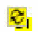

Reviewing and Editing a Design Intent Created in Layout XL
If a design intent was created in Layout XL, the process differs as all design intents must be reviewed, synced, and validated within Schematics XL before they are fully integrated into the normal implementation process.
In the Schematics XL Navigator, the new design intent has a sync 
icon and the review
status icon displayed beside it.
- In the Navigator, right-click the design intent, or on the canvas right-click an object associated with the new design intent and choose Design Intent – Edit Design Intent.
- If there are multiple design intents available for the selected objects, a submenu is displayed. Choose the design intent to be edited.
-
Review the Notes in the lower section of the form:
- If you identify the need for further changes, or any issues or queries that prevent you from validating the new design intent, record these within the middle section’s Notes.
- Alternatively, if the new design intent has been satisfactorily implemented and requires no other action, it can be considered validated and signed off. In the Notes within the middle section, confirm that the design intent is acceptable and add any additional comments if required . Select the Signed Off option and click OK. The status icon for the object changes to complete .
- Edit the Name, Style or Profile on the upper section of the form as required.
- Click OK.
-
In the Navigator, individually sync the new design intent.
Only the selected design intent is synced between the schematic and layout cellviews. The sync icon is removed indicating that this design intent is now up to date.
In Layout XL, the Sync button on the Design Intent toolbar is enabled and the affected objects are immediately displayed with a sync icon as a prompt to Sync Design Intent. Each object has an implementation status of none as the layout designer is required to respond to the notes or queries and can be processed as normal.
Related Topics
Schematic and Layout View Synchronization
Return to top